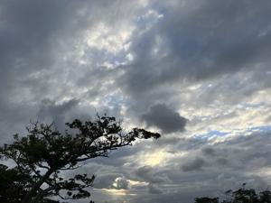

うるがいの話 ある日
最新: 拍子の話【うるがいの話 ある日】とは 一日だけのプログです
『うるがいの話』の最新一日だけのプログで、通信料が少なく経済的だ。カニの画像をクリックすると全ての日付が載る『うるがいの話』サイトを表示します
|
|
【うるがいの話】 うるがい(ｳﾙｶﾞｲ urugai)とは、『もずくがに』の名前でとても大きくなります。 |
|---|---|
|
|
【カミマヤーの話】 猫のことを方言でマヤーといいます。カミマヤー（kamimayaa）とは、神の猫のことです。 |
|
【たながぁの音楽】 たながぁ（ﾀﾅｶﾞｰ tanagaa）とは手長えびのことで、何種類かあり大きいのは車 エビぐらいになります。 |

|
【ぶながぁの話】 ぶながぁ(ﾌﾞﾅｶﾞｰ bunagaa)とは、赤い髪の毛、赤い身体、そして身長は１ｍ２０ｃｍ ぐらい、川の蟹を食べているの目撃された。場所は沖縄県国頭郡大宜味村のと ある村僕の隣近所に住んでいる爺さんから、聞いた話です。 |
|
|
【ギーマの話】 ギーマ(giima)とは、山原の里山に咲くスズランに似た、 花を付けます。実は食べられます、 気が付くと口の周りが紫になっています。 |
2024年01月22日 (月）拍子の話
15:04

同じ曲だけど、複数の楽譜をみていると拍子の区切り方が、まちまちなのであ
る。岩宮眞一郎『音と音楽の科学』の本の、リズムとテンポのしくみと表現で
２拍子，３拍子，４拍子といったリズムの各拍には、強弱があります。強い拍
を強拍（ダウンビート），弱い拍を弱拍 （アップビート）と呼びます。クラ
シックなどの西洋音楽の場合，２拍子だと強弱の繰り返し、３拍子だと強弱弱
の繰り返しになります。４拍子の場合は、強弱·中強弱の繰り返しになります。
いずれも，小節の先頭にアクセントがあります。

ホー、そうなのか。なんとなく理屈は、分かったような気がするが、私のレベ
ルでは強弱を認識できることはないと思う（今のところ）。
１４時５８分 ビットコインの総資産 ￥１７、６６５（↓２０６）